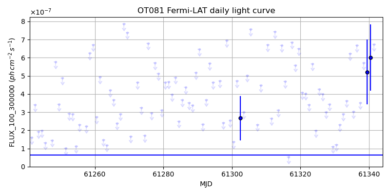
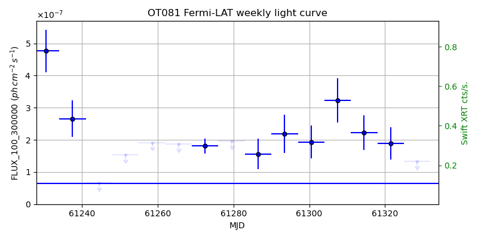
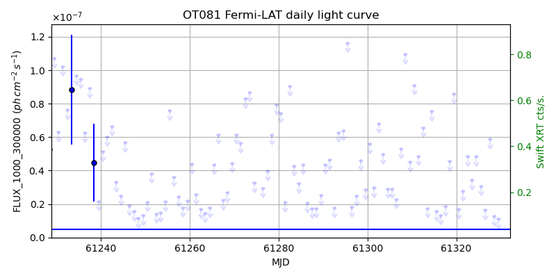
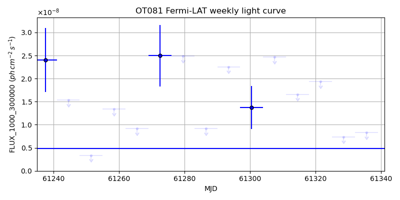

LAT Lightcurve site: https://fermi.gsfc.nasa.gov/ssc/data/access/lat/msl_lc/source/OT_081
Swift site: https://www.swift.psu.edu/monitoring/source.php?source=OT081
NED: Query
Time of last update of this page: UT: 2026-10-24 15:24 (MJD: 61337.642)
| Property | Value |
|---|---|
| R.A. | 17:51:32.88 |
| Dec. | 9:39:00.0 |
| z | 0.322 |
| 3FGL SpectrumType | LogParabola |
| 3FGL PL Index | |
| 3FGL Flux_100_300000 | 6.46e-08 1 / (s cm2) |
| 3FGL Flux_1000_300000 | 4.83e-09 1 / (s cm2) |
| 3FGL Flux >200 GeV | 1.07e-12 1 / (s cm2) |
| 3FGL Extrap. Crab >200 GeV | 0.00 |
| 3FGL Flux After EBL Absorption >200GeV | 4.02e-13 1 / (s cm2) |
| 3FGL EBL Crab Fraction >200GeV | 0.00 |

| MJD | dMJD | Flux | dFlux | Frac3FGL | FracCrab>200GeV | EBLFracCrab>200GeV |
|---|---|---|---|---|---|---|
| 61332.50 | 0.50 | 2.89e-07 | 0.00e+00 | 0.00 | 0.00 | 0.00 |
| 61333.50 | 0.50 | 3.63e-07 | 0.00e+00 | 0.00 | 0.00 | 0.00 |
| 61334.50 | 0.50 | 6.23e-07 | 0.00e+00 | 0.00 | 0.00 | 0.00 |
| 61335.50 | 0.50 | 3.02e-07 | 0.00e+00 | 0.00 | 0.00 | 0.00 |
| 61336.50 | 0.50 | 6.68e-07 | 0.00e+00 | 0.00 | 0.00 | 0.00 |

| MJD | dMJD | Flux | dFlux | Frac3FGL | FracCrab>200GeV | EBLFracCrab>200GeV |
|---|---|---|---|---|---|---|
| 61300.50 | 3.50 | 1.93e-07 | 5.07e-08 | 2.99 | 0.01 | 0.00 |
| 61307.50 | 3.50 | 3.23e-07 | 6.93e-08 | 4.99 | 0.02 | 0.01 |
| 61314.50 | 3.50 | 2.22e-07 | 5.41e-08 | 3.43 | 0.02 | 0.01 |
| 61321.50 | 3.50 | 1.89e-07 | 4.94e-08 | 2.92 | 0.01 | 0.00 |
| 61328.50 | 3.50 | 1.32e-07 | 0.00e+00 | 0.00 | 0.00 | 0.00 |

| MJD | dMJD | Flux | dFlux | Frac3FGL | FracCrab>200GeV | EBLFracCrab>200GeV |
|---|---|---|---|---|---|---|
| 61332.50 | 0.50 | 3.27e-08 | 0.00e+00 | 0.00 | 0.00 | 0.00 |
| 61333.50 | 0.50 | 4.57e-08 | 0.00e+00 | 0.00 | 0.00 | 0.00 |
| 61334.50 | 0.50 | 2.32e-08 | 0.00e+00 | 0.00 | 0.00 | 0.00 |
| 61335.50 | 0.50 | 1.78e-08 | 0.00e+00 | 0.00 | 0.00 | 0.00 |
| 61336.50 | 0.50 | 1.94e-08 | 0.00e+00 | 0.00 | 0.00 | 0.00 |

| MJD | dMJD | Flux | dFlux | Frac3FGL | FracCrab>200GeV | EBLFracCrab>200GeV |
|---|---|---|---|---|---|---|
| 61300.50 | 3.50 | 1.37e-08 | 4.66e-09 | 2.84 | 0.01 | 0.00 |
| 61307.50 | 3.50 | 2.47e-08 | 0.00e+00 | 0.00 | 0.00 | 0.00 |
| 61314.50 | 3.50 | 1.66e-08 | 0.00e+00 | 0.00 | 0.00 | 0.00 |
| 61321.50 | 3.50 | 1.93e-08 | 0.00e+00 | 0.00 | 0.00 | 0.00 |
| 61328.50 | 3.50 | 7.36e-09 | 0.00e+00 | 0.00 | 0.00 | 0.00 |
--------------------------------------------------------- Using user-supplied coords: 17:51:32.88 9:39:00.0 2000 --------------------------------------------------------- FLWO UT night of: 2026-10-25 Local Sid. @ Midnight: 01:50 Sunset (-15.0) (local, UT): 18:49 01:49 Sunrise (-15.0) (local, UT): 05:27 12:27 Moonrise (local, UT): Moonset (local, UT): Moon phase: 0.99 --------------------------------------------------------- AzTime LSID UT Obj_el Obj_az Mn_el Mn_az Sep. --------------------------------------------------------- 18:49 20:39 01:49 45.7 249.5 26.2 94.5 104.7 19:19 21:09 02:19 39.6 255.3 32.4 98.6 104.9 19:49 21:39 02:49 33.3 260.2 38.6 103.2 105.0 20:19 22:09 03:19 27.0 264.7 44.7 108.4 105.2 20:49 22:39 03:49 20.6 268.8 50.6 114.6 105.3 21:19 23:09 04:19 14.2 272.7 56.2 122.3 105.5 21:49 23:39 04:49 7.9 276.6 61.2 132.2 105.6 22:19 00:09 05:19 1.8 280.4 65.5 145.3 105.7 22:49 00:39 05:49 -3.8 284.4 68.4 162.2 105.8 23:19 01:10 06:19 -10.9 288.6 69.4 182.2 106.0 23:49 01:40 06:49 -16.9 293.2 68.2 202.0 106.1 00:19 02:10 07:19 -22.7 298.1 65.1 218.6 106.2 00:49 02:40 07:49 -28.2 303.6 60.8 231.3 106.3 01:19 03:10 08:19 -33.3 309.9 55.7 240.9 106.5 01:49 03:40 08:49 -38.0 317.0 50.1 248.5 106.6 02:19 04:10 09:19 -42.0 325.1 44.3 254.6 106.8 02:49 04:40 09:49 -45.2 334.3 38.2 259.8 106.9 03:19 05:10 10:19 -47.5 344.5 32.1 264.4 107.1 03:49 05:40 10:49 -48.6 355.5 26.0 268.5 107.3 04:19 06:10 11:19 -48.5 6.7 19.9 272.4 107.5 04:49 06:40 11:49 -47.1 17.6 13.8 276.2 107.7 05:19 07:11 12:19 -44.6 27.6 7.8 279.9 107.9 05:27 07:18 12:27 -43.8 30.1 6.2 280.9 108.0 --------------------------------------------------------- Moon up all night, no dark time. Dark hours >55 deg.: 0.00